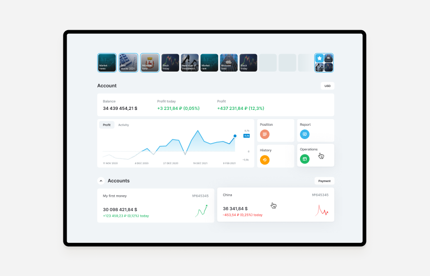
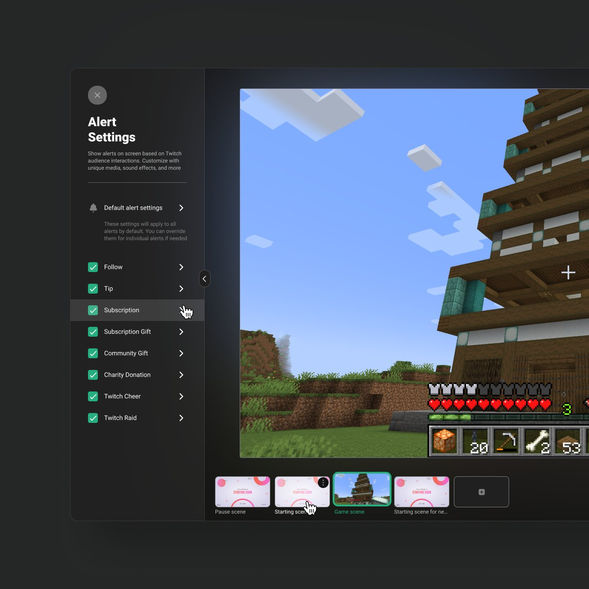
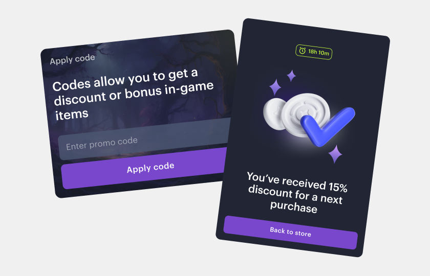
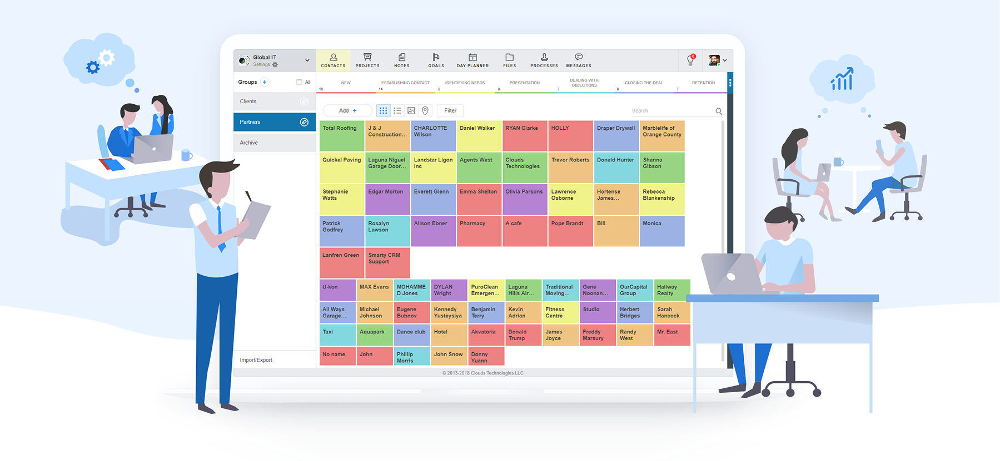
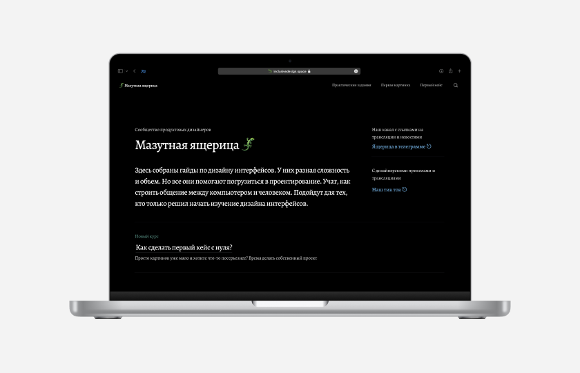
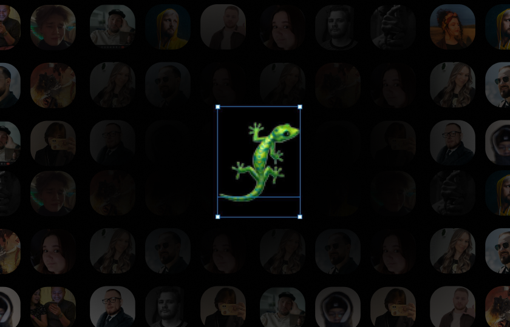

Открытие Брокер — кабинет инвестора

Редизайн обзора веб-кабинета. Продуктовый дизайн, исследования и руководство командой.
В «Открытие Брокер» отвечал за дизайн главной страницы кабинета инвестора, отчётности портфеля и настроек профиля. Последние полгода был лидом дизайн-команды.
Внедрил дизайн-ревью и регламенты, занимался наймом и развитием дизайнеров. Двое нанятых дизайнеров впоследствии стали senior.
С 2022 года работаю в Xsolla над игровыми магазинами и инструментами для издателей.

Редизайн обзора веб-кабинета. Продуктовый дизайн, исследования и руководство командой.

Весь дизайн обновления сделал самостоятельно, работая с американской командой.

Занимался ИИ в Xsolla.
Самостоятельно проектировал систему наград для игроков и её настройку для издателей, готовил компоненты и проверял реализацию. Работал над шаблоном вебшопа, промокодами и дизайн-системой. Проводил интервью на английском. В 2026 участвовал в редизайне Site Editor.

Самостоятельно спроектировал сообщения с чатами и видеозвонками — функция была реализована на всех платформах продукта: в вебе, на телефонах и планшетах.
Интервью с профессионалами и UX-тестирование медицинского сервиса.

Дизайн и сборка лонгрида об истории Грузии на Readymag по материалу Dannie Kulinich.
Пишу об истории интерфейсов: визуальных метафорах Macintosh, работах Susan Kare, символе Command ⌘ и стартовом звуке Windows 95.
Рассказываю об ИИ и делюсь экспериментами с Nano Banana в Figma и браузером Atlas.

2 млн просмотров за год · тысячи подписчиков
Основал сообщество, проводил публичные созвоны, разборы и конкурсы, создавал бесплатные курсы по интерфейсам. Был ментором четырёх начинающих дизайнеров.
Выступал о применении ИИ в работе дизайнера. Перед одной из лекций проводил опрос дизайнеров об использовании ИИ.
Второе место с командой Red Shorts на конкурсе дизайна интерфейсов Альфа-Банка.
Рассказал о редизайне кабинета инвестора «Открытие Брокер».